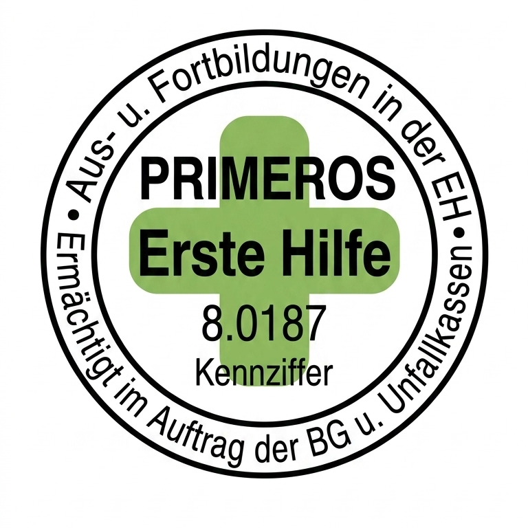

Die Sicherheit und das Wohlbefinden meiner Klienten stehen für mich an erster Stelle. Hier finden Sie alle offiziellen Zertifikate und Nachweise über meine Aus- und Weiterbildungen.
Ausgebildet für Notfälle im Alltag – für ein sicheres Gefühl bei jeder Begleitung.
